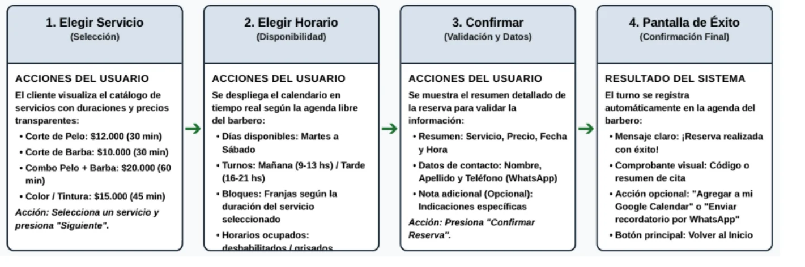
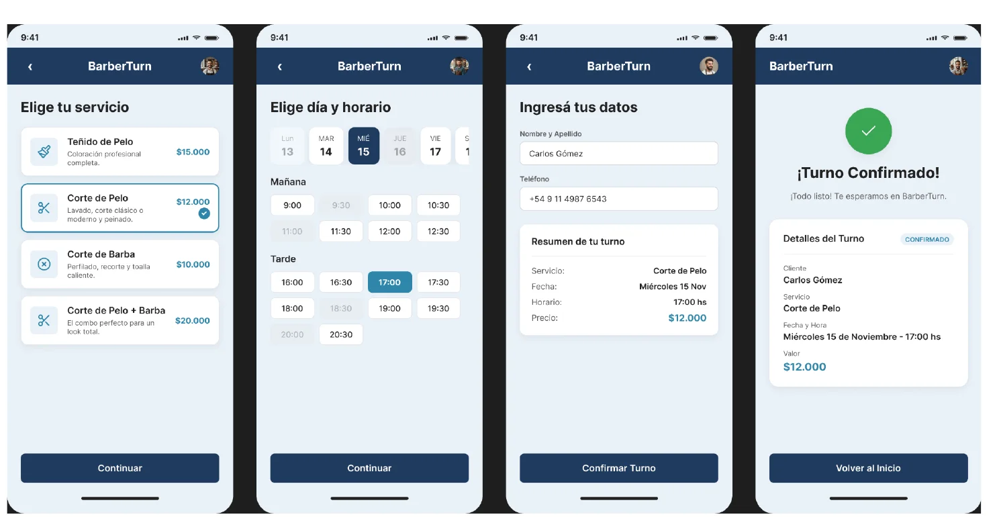

Cliente que reserva
Hombre o mujer de entre 18 y 50 años que quiere agendar rápido y por su cuenta desde el celular, sin coordinar por mensajes ni llamadas.
- Práctico
- Digital
- Organizado
- Impaciente ante esperas
Una app para elegir servicio, horario y confirmar el turno en menos de dos minutos, pensada para el celular.
Mi rol: colaborador; participé en la realización del proyecto y en sus modificaciones. Materia: Diseño UX-UI. Ver el prototipo en Figma (abre en pestaña nueva)
Un barbero independiente con la agenda llena pierde tiempo respondiendo mensajes de WhatsApp para coordinar turnos. Esas interrupciones, incluso en medio de un corte, generan errores en la agenda, como turnos superpuestos, y bajan la calidad de la atención.
Del lado del cliente pasa algo parecido: tiene que esperar la respuesta, no ve qué días y horarios hay libres y, si no recibe una confirmación visual clara, puede olvidarse del turno.
Hipótesis de trabajo del taller, no una investigación con personas reales.
Hombre o mujer de entre 18 y 50 años que quiere agendar rápido y por su cuenta desde el celular, sin coordinar por mensajes ni llamadas.
Tiene la agenda llena y necesita que las reservas entren solas, sin interrumpir los cortes ni generar turnos superpuestos.
Reservar en menos de 2 minutos, ver precios y disponibilidad en tiempo real y evitar superposiciones o malentendidos.
La demora en responder por WhatsApp, no ver los horarios libres y olvidar el turno sin una confirmación clara.
Elegir servicio, elegir horario, confirmar y pantalla de éxito. El foco del taller fue la arquitectura de información: cómo se organiza la elección de servicio y horario de forma simple, y cómo se comunica una confirmación exitosa.


Cada servicio muestra su precio y una marca de selección, para decidir sin dudas.
Los horarios se agrupan en mañana y tarde, y los no disponibles se atenúan.
Un botón principal en la parte inferior guía el avance: continuar, confirmar y volver al inicio.
Un check y el detalle del turno con estado confirmado reducen el olvido y la duda.
El resultado es un prototipo navegable en Figma que conecta las cuatro pantallas en el orden del flujo.
Mi aporte: colaboré en la realización del proyecto y en las modificaciones que se fueron haciendo.
Aprendizaje principal del trabajo: organizar una elección con pocos pasos y comunicar bien cuándo una acción salió bien.